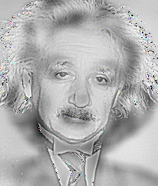
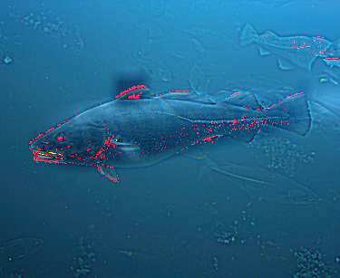
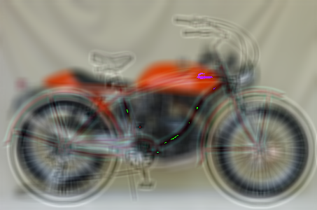
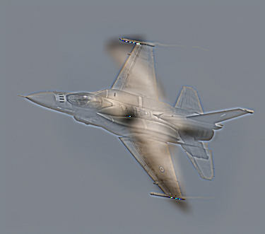

Dog or Cat?
Nominally, the primary objective of this exercise was the production of so-called "hybrid images" - composites of the high frequency information from one image with the low frequency information of another. Relying on peculiarities in human perception, a well-formed hybrid image is such that it will appear to the eye as one thing close-up, while appearing as something else entirely from far away. The five hybrid images produced as part of this excerise - and displayed at the bottom of this report - achieve this effect to varying degrees.
In reality, much of this assignment was focused not on image hybridization, but rather the tools and processes needed to produce such results. This assignment required that one implement two-dimensional convolution - and, subsequently, high-pass and low-pass image filtering - without relying on existing convolutional or filtering functions provided by numerical and scientific computing libraries such as NumPy, SciPy, and OpenCV. The code implementation provided here, while perhaps edifying as an exercise to write and comprehend, is nevertheless grossly inefficient and computationally burdensome to use in practice. It should not be used while vastly superior tools are available, such as with the libraries mentioned above.
A cross-correlation function served as the basis for subsequent convolution functions. As cross-correlation is closely related to convolution - and identical, in the case of a symmetrical kernel - 2D convolution follows very easily from this. Its name in code will be referenced as ccor2d().
def ccor2d(img, kernel, padding_type):
### Create a blank output matrix.
output_img = np.empty(img.shape)
### Get dimensions. Rows first, columns second.
img_dims = img.shape
kernel_dims = kernel.shape
### Determine required vertical and horizontal padding
v_pad = (kernel_dims[0]-1)/2
h_pad = (kernel_dims[1]-1)/2
### Pad the image
pad_spec = ((v_pad,v_pad),(h_pad,h_pad))
pad_img = np.pad(img, pad_width = pad_spec, mode = padding_type)
### Correlate image with kernel
for i in range(0, img_dims[0], 1):
slice = pad_img[i:kernel_dims[0]+i,:kernel_dims[1]]
for j in range(0, img_dims[1], 1):
center = pad_img[i+v_pad,j+h_pad]
sliding_window = pad_img[i:kernel_dims[0]+i,j:kernel_dims[1]+j]
output_img[i,j] = operator(sliding_window, kernel)
return output_img
def operator(a,b):
container = []
for i in range(0, a.shape[0], 1):
for j in range(0, a.shape[1], 1):
container.append(a[i,j]*b[i,j])
return sum(container)
There were a number of key considerations in ensuring the proper function of cross-correlation. The first is the issue of padding. Because filters perform weighted operations on the pixel directly at their center point, and because the convolution and cross-correlation require that said filter be applied to each and every pixel, the issue of undefined values at the image edge is an important consideration. Furthermore, with differing filter dimensions, each and every convolution scenario is unique with what padding will be required. A dynamic padding buffer based on the sizing of the filter was implemented using NumPy's pad() function.
Secondly, ccor2d() needed to be able to systemically and comprehensively perform correlation operations across the entire image. This can be visualized as the filter "sliding" across the image, evaluating each pixel. Iterative looping alongside sliding index slicing allowed for the function's view of the image update from left to right and top to bottom. Once these considerations were addressed, a sub-function, operator(), was used to perform element-wise multiplication with the filter and its current corresponding view into the image and sum into the new, final value.
def conv2d(img, kernel, padding, color):
flip_k = np.flip(kernel,0)
flip_k = np.flip(flip_k,1)
### Split color image into channels before processing
if color == 1:
img[:,:,0] = ccor2d(img[:,:,0], flip_k, padding)
img[:,:,1] = ccor2d(img[:,:,1], flip_k, padding)
img[:,:,2] = ccor2d(img[:,:,2], flip_k, padding)
return img
### If grayscale, process as normal
else:
return ccor2d(img, flip_k, padding)
With cross-correlation in place, 2D convolution (2dconv()) was largely straightforward, requiring that the filter simply be flipped both horizontally and vertically prior to performing the operation. In order to handle color images, information from the original image tensor were convolved individually and in-place with the requested kernel.
def gauss(sigma, size, size_y=0):
### Define a linear set of values, with number of values determined by the input parameter 'size'
x_ax = np.linspace(-1, 1, size)
### Account for non-regular y-dimensions
if size_y:
y_ax = np.linspace(-1, 1, size_y)
else:
y_ax = np.linspace(-1, 1, size)
### Create a square meshgrid using above value sets
x, y = np.meshgrid(x_ax, y_ax)
### Create gaussian approximation with requested deviation
kernel = np.exp(-(x**2/(2*sigma**2)+y**2/(2*sigma**2)))
return kernel / np.sum(kernel)
Next was the creation of a custom gaussian filter function. By creating a scalable meshgrid and by mapping the gaussian function onto this grid with controllable variables, an adjustable filter function was produced.
def lo_pass(img, fname, sigma, color, size=15, padding='symmetric', saving=True):
gaussian_filter = gauss(sigma, size)
processed_img = conv2d(img, gaussian_filter, padding, color)
if saving:
cv2.imwrite('../data/'+fname+'_lo'+str(sigma)+'.bmp', processed_img)
else:
pass
return processed_img
def hi_pass(img, fname, sigma, color, size=15, padding='symmetric', saving=True, complement=True):
original = np.copy(img)
copy = np.copy(img)
lo_img = lo_pass(copy, fname, sigma, color, size, padding, complement)
if complement:
print 'Low-pass filter of '+str(fname)+' saved. Now subtracting from original image to obtain high-pass result.'
else:
pass
processed_img = np.subtract(original, lo_img)
if saving:
cv2.imwrite('../data/'+fname+'_hi'+str(sigma)+'.bmp', processed_img)
print 'High-pass result of '+str(fname)+' saved.'
else:
pass
return processed_img
With all the basic convolutional tools set up, high-pass and low-pass filtering could then be created. As a low-pass filter can be created simply by gaussian blurring, this function, lo_pass(), takes input specifying an image and gaussian filter parameters. High-pass filtering with hi_pass() relied on the subtraction of low-frequency information from the base image, meaning that it, too, relied on the application of a gaussian filter.
|   |
|   |
The best images resulting from this process are shown above.
Find the repository here.